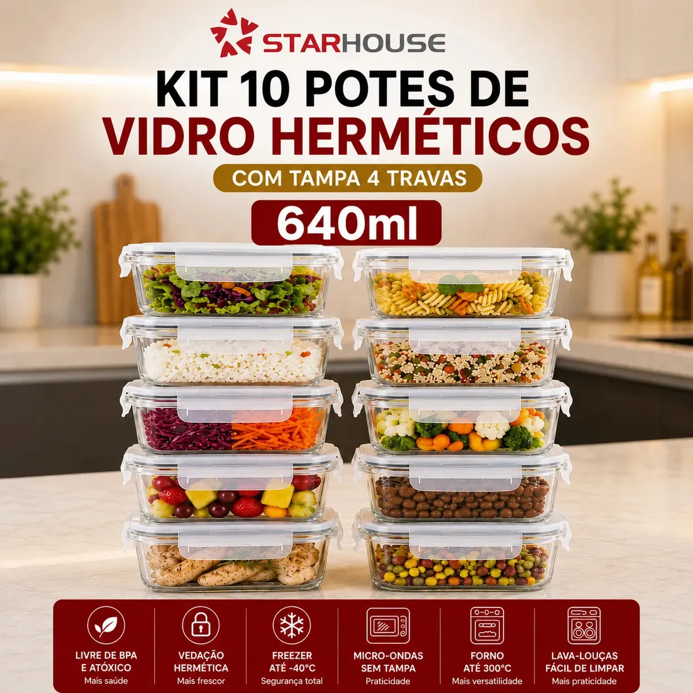

Marmitas da semana
Separe as refeições com antecedência e deixe tudo pronto para a correria.
Organize marmitas, conserve alimentos por mais tempo e leve seus preparos do freezer ao forno com muito mais praticidade.
Pagamento processado no ambiente da loja

Vidro resistenteMais segurança no uso diário
Super vedação4 travas em cada tampa
Alta versatilidadeDo freezer ao forno*
Fácil de limparMais praticidade na cozinha
Use as setas ou deslize as imagens para conferir os diferenciais.
Os potes têm tamanho versátil para porções individuais, ingredientes, lanches e refeições completas. O vidro transparente facilita a visualização e ajuda a manter a geladeira organizada.
Vedação com 4 travasAjuda a evitar vazamentos e a preservar os alimentos.
Vidro fácil de higienizarNão mancha com facilidade e não retém odores como recipientes comuns.
Formato compacto e empilhávelAproveite melhor o espaço da geladeira e dos armários.
Separe as refeições com antecedência e deixe tudo pronto para a correria.
Armazene porções de forma prática e identifique o conteúdo com facilidade.
Use o mesmo recipiente para guardar, aquecer e levar à mesa.
Superfície lisa de vidro para uma higienização muito mais prática.
O anúncio apresenta um kit com 10 potes de vidro, cada um com capacidade de 640 ml.
Sim. As tampas apresentadas possuem quatro travas e anel de vedação.
O recipiente de vidro é anunciado como compatível com micro-ondas sem a tampa. Siga sempre as instruções de uso do fabricante.
O anúncio informa resistência térmica do recipiente de vidro. Não utilize a tampa no forno ou na airfryer e respeite as orientações do fabricante.
Clique em qualquer botão de compra. Você será direcionado para a página responsável pelo processamento do pedido.